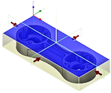

Coin du modèle
Sélection de deux faces
Centre du brut
Sélection de la face supérieure
Vous pouvez sélectionner des faces du brut ou du modèle de la pièce.
Les options de sélection de face varient en fonction de votre choix.
|
 |
Coin du modèle |
Centre du brut |
 |
 |
Bossage du modèle |
Bossage du brut |